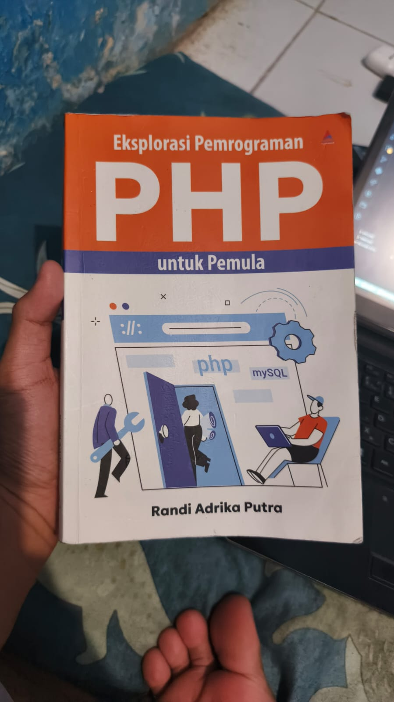
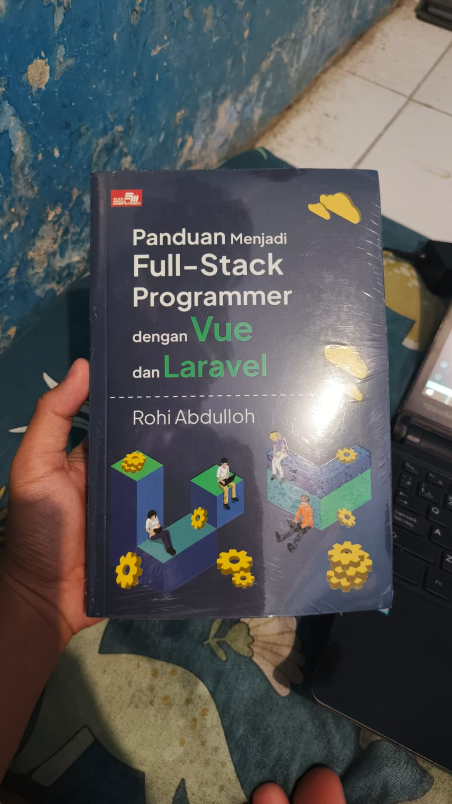
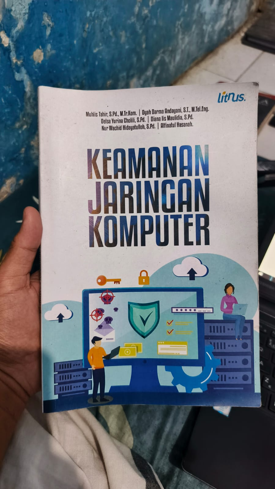
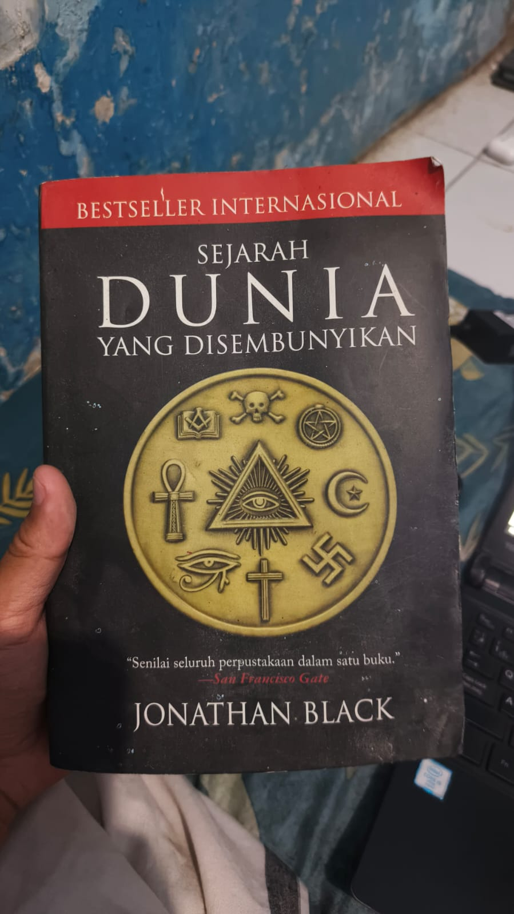
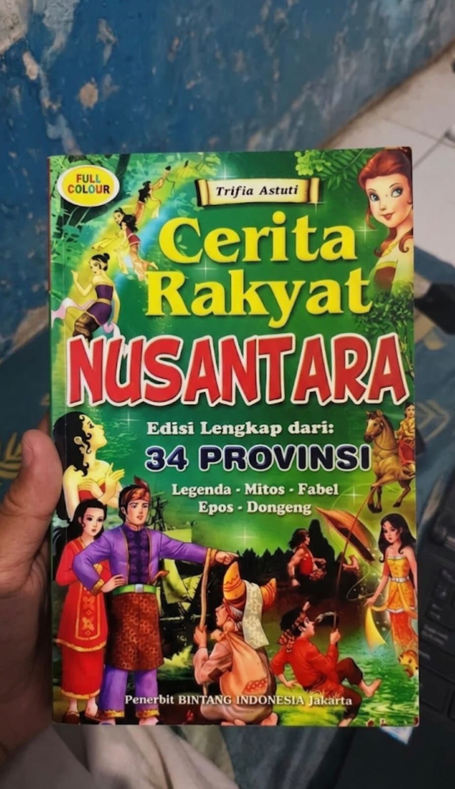

| Gambar | Informasi Buku | Kutipan | Website |
|---|---|---|---|
|
 |
Penulis : Randi Adrika Putra Penerbit : Anak Hebat Indonesia Tahun : 2025 |
"Belajar pemrograman membutuhkan latihan yang konsisten." | Lihat Buku |
 |
Penulis : Rohi Abdullah Penerbit : Elex Media Komputindo Tahun : 2024 |
"Seorang programmer harus mampu memahami front-end dan back-end." | Lihat Buku |
 |
Penulis : Muhlis Tahir, dkk. Penerbit : Literasi Nusantara Abadi Tahun : 2023 |
"Keamanan jaringan merupakan bagian penting dalam dunia teknologi informasi." | Lihat Buku |
| Gambar | Informasi Buku | Kutipan | Website |
|---|---|---|---|
 |
Penulis : Jonathan Black Penerbit : Pustaka Alvabet Tahun : 2019 |
"Sejarah menyimpan banyak rahasia yang belum terungkap." | Lihat Buku |
| Gambar | Informasi Buku | Kutipan | Website |
|---|---|---|---|
 |
Penulis : Trifia Astuti Penerbit : Bintang Indonesia Tahun : 2014 |
"Cerita rakyat mengajarkan nilai kehidupan melalui kisah sederhana." | Lihat Buku |